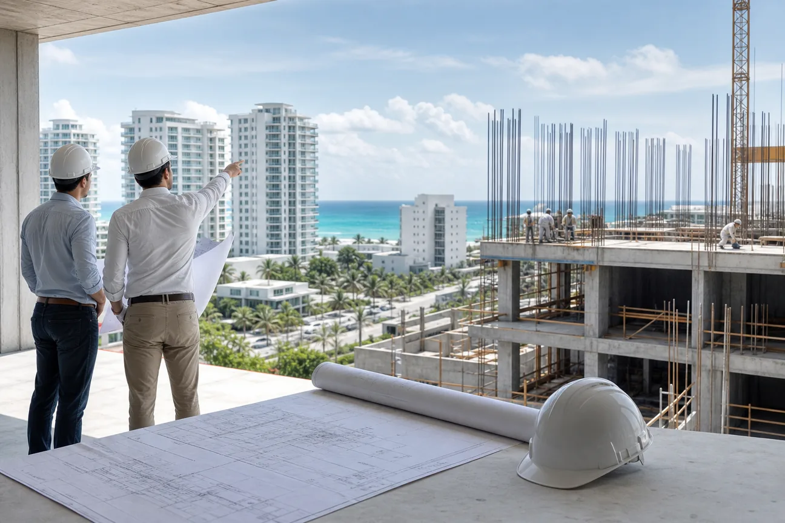
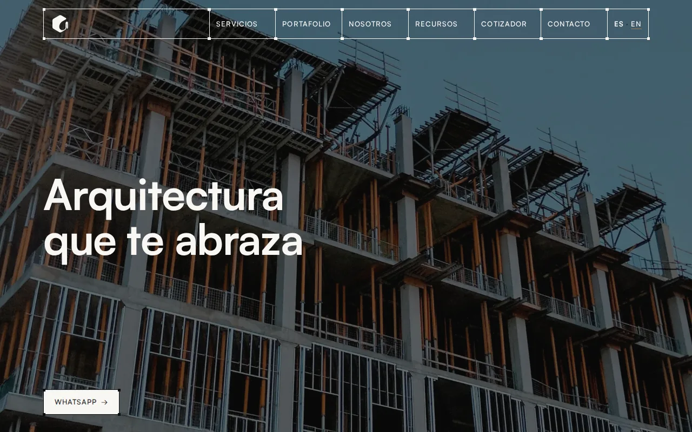
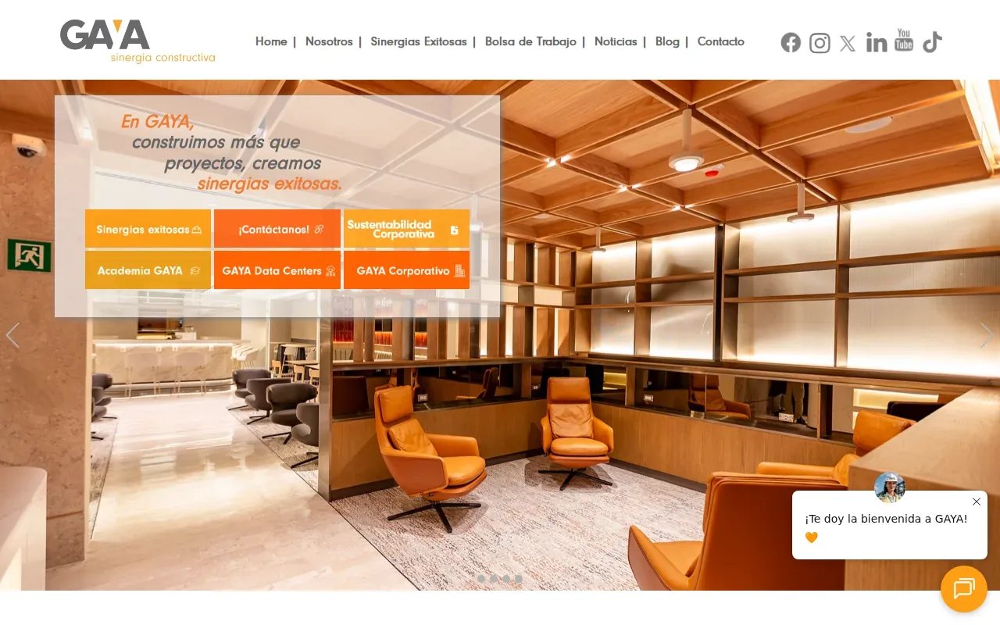
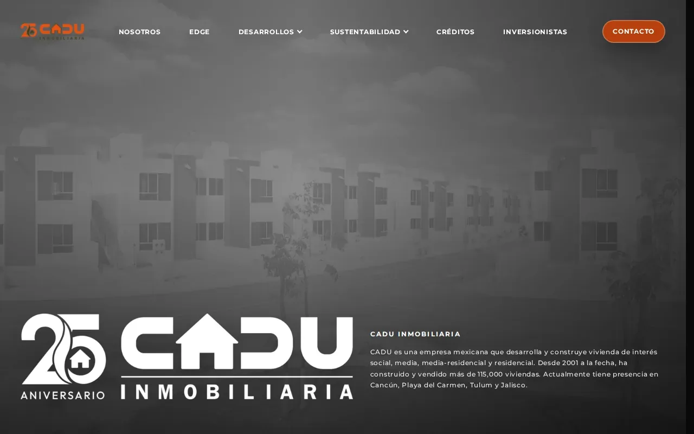
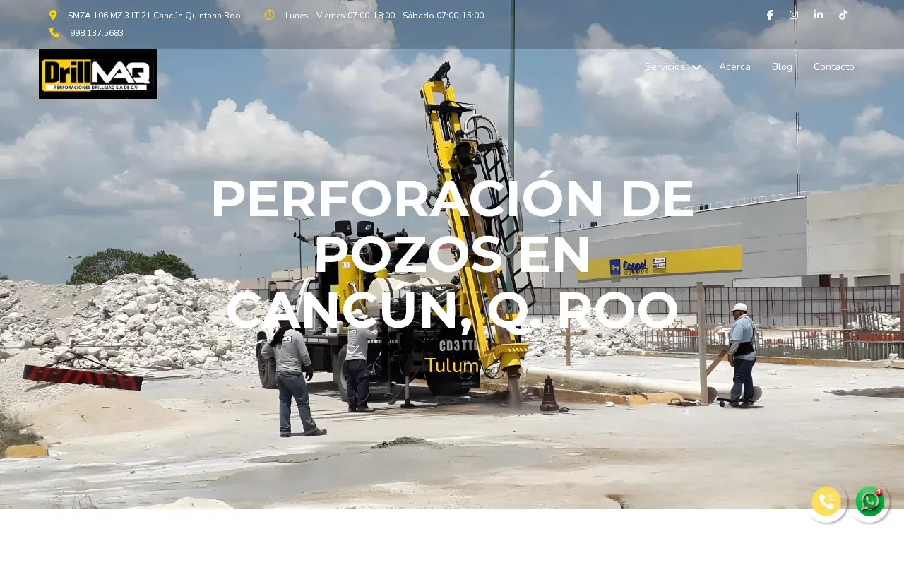

29 de septiembre de 2026
12 min de lectura
Constructoras en Cancún: cómo comparar opciones
Compara constructoras en Cancún para tu obra. Revisa alcances, cotizaciones, entregables y diferencias entre obra personalizada, desarrollos y especialistas.
Para comparar constructoras en Cancún, empieza por el tipo de proyecto que quieres resolver: construir en tu terreno, remodelar un inmueble, contratar una partida especializada o comprar vivienda en un desarrollo. Son decisiones distintas. Una lista de empresas resulta útil cuando explica esas diferencias y permite preparar una solicitud que cada proveedor pueda responder con claridad.
Grupo Galarza ofrece diseño, construcción, remodelación y supervisión de obra. Esta guía reúne su propuesta y otras referencias con sitios propios consultados en septiembre de 2026. El orden organiza alcances, sin asignar premios ni afirmar que una empresa sea superior a las demás. Disponibilidad, cobertura y condiciones deben confirmarse para cada proyecto.
La comparación se apoya en tres preguntas: qué servicio publica cada empresa, qué parte de tu necesidad puede corresponder a ese servicio y qué información falta para cotizar. No se comparan precios ni resultados de obras que no se hayan documentado. Tampoco se presupone que una desarrolladora o un especialista ejecuten una vivienda personalizada de principio a fin.

Ilustración generada para este tema. No muestra personal ni una obra de Grupo Galarza.
Contenido del artículo
- Grupo Galarza: diseño y ejecución de obra
- GAYA: consultoría y gestión de construcción
- CADU: vivienda en desarrollos
- Drillmaq: trabajos especializados
- Comparación para distinguir alcances
- Qué enviar para pedir cotización
- Cómo revisar las propuestas de constructoras en Cancún
- Qué acordar antes de comenzar
- Preguntas frecuentes
Grupo Galarza: diseño y ejecución de obra
Grupo Galarza reúne servicios de urbanización, diseño, construcción, mantenimiento, proyectos inmobiliarios y foto y video. Diseño, obra y supervisión tienen cobertura nacional; mantenimiento se ofrece en Cancún, Playa del Carmen y Riviera Maya. El alcance debe definirse según el servicio solicitado y las condiciones del proyecto.

Página inicial de Grupo Galarza. Fuente.
Si buscas construir o remodelar, plantea desde la primera conversación qué documentación tienes y qué necesitas contratar. Puedes revisar construcción y supervisión de obra para conocer el servicio. Si todavía necesitas definir espacios y distribución, consulta Diseño en Cancún y Riviera Maya | Grupo Galarza.
Para comparar una propuesta, solicita partidas, entregables, exclusiones y responsables. Explica también si quieres contratar varias etapas o resolver una necesidad puntual. Esa información permite conversar sobre el alcance sin atribuir a la empresa precios, plazos o garantías que no estén incluidos en una propuesta concreta.
GAYA: consultoría y gestión de construcción
GAYA describe servicios de consultoría de proyectos de construcción, preconstrucción, gerencia de construcción, diseño y construcción, contratación general y reposicionamiento de edificios. Su sitio presenta distintos sectores, entre ellos hotelería, corporativo, industrial, residencial y comercial. Esta referencia puede servir para explorar una necesidad de gestión o ejecución con varias especialidades.

Sitio de GAYA consultado para identificar sus servicios publicados. Fuente.
Antes de incluirla en una comparación de constructoras en Cancún, confirma si atiende tu ubicación, tipo de inmueble y escala de proyecto. Un catálogo nacional de servicios no confirma por sí solo la disponibilidad para una obra específica. Pide una propuesta que identifique el equipo asignado y el alcance que asumiría.
Si lo que buscas es gerencia de construcción, aclara quién contratará y pagará cada suministro y cada trabajo. Distingue las funciones de coordinación de las obligaciones de ejecución. Esa separación permite comparar una propuesta de gestión con otra de obra sin tratar sus importes como si describieran el mismo contrato.
CADU: vivienda en desarrollos
CADU se presenta como una empresa mexicana que desarrolla y construye vivienda. Su sitio muestra desarrollos en Quintana Roo y Jalisco e identifica presencia en Cancún, Playa del Carmen y Tulum. Es una referencia para quien evalúa adquirir vivienda en un desarrollo y quiere contrastar esa ruta con construir en un terreno propio.

Sitio de CADU Inmobiliaria. Sus desarrollos representan una ruta de compra distinta de una obra personalizada. Fuente.
Al revisar un desarrollo, identifica el inmueble ofrecido, ubicación, características de entrega y condiciones de la operación. No presupongas que la empresa ofrece construir un diseño personalizado en cualquier predio. Esa posibilidad, si interesa a tu proyecto, requiere una confirmación directa y un alcance específico.
Para comparar comprar y construir, prepara dos listas de necesidades con la misma base: espacios, ubicación, uso previsto y características que consideras indispensables. Después registra qué satisface cada alternativa y qué quedaría por adaptar. Evita resolver esa comparación únicamente con fotografías o un precio inicial que no explique lo incluido.
Drillmaq: trabajos especializados
Drillmaq publica servicios de perforación de pozos, excavaciones y obra civil en Quintana Roo. Su perfil corresponde a una especialidad que puede participar en una obra mayor. Conviene distinguir ese suministro de una contratación que incluya diseño arquitectónico y construcción de una vivienda completa.

Sitio de Drillmaq con su especialidad publicada. Fuente.
Si el proyecto necesita ese tipo de trabajo, comparte ubicación, documentación disponible y condiciones conocidas del sitio. Pide que la propuesta describa actividades, entregables, exclusiones y coordinación con las otras partidas. Los requerimientos y autorizaciones que correspondan deben revisarse para la ubicación y el trabajo concretos.
Define también quién recibirá la partida y qué documentación se necesita para continuar la obra. Una especialidad puede depender de decisiones previas y afectar trabajos posteriores. La propuesta debe permitir reconocer esas relaciones para integrarla al programa general, sin atribuir al especialista responsabilidades que no haya aceptado.
Comparación para distinguir alcances
Estas referencias sirven para preparar preguntas, no para sustituir una evaluación técnica o comercial. La comparación separa lo publicado por cada empresa de lo que necesitas confirmar. Ningún apartado equivale a una recomendación de contratación ni a una verificación de disponibilidad actual.
Referencias de empresas y preguntas para tu proyecto
Grupo Galarza
- Alcance publicado: Diseño, construcción, remodelación, supervisión y otros servicios del inmueble
- Qué conviene confirmar: Partidas, entregables y cobertura del servicio solicitado
GAYA
- Alcance publicado: Consultoría, gestión y ejecución de construcción
- Qué conviene confirmar: Disponibilidad para el proyecto en Cancún y responsabilidades contratadas
CADU
- Alcance publicado: Desarrollo y construcción de vivienda
- Qué conviene confirmar: Características del inmueble y condiciones de compra del desarrollo
Drillmaq
- Alcance publicado: Perforaciones, excavaciones y obra civil
- Qué conviene confirmar: Alcance de la especialidad y coordinación con el resto de la obra
Si quieres construir una casa en tu terreno, empieza por las propuestas que respondan expresamente a esa necesidad. Si buscas una vivienda dentro de un desarrollo, compara inmuebles y condiciones de entrega. Si ya tienes contratado el proyecto principal y falta una partida, prepara una solicitud para esa especialidad.
También puedes consultar Recursos: arquitectura y construcción | Grupo Galarza para preparar dudas sobre tu obra, o conocer la presentación de Grupo Galarza: Arquitectura, construcción y mantenimiento en Cancún. El objetivo de esas consultas es llegar a la cotización con una necesidad reconocible y documentos suficientes para describirla.
Qué enviar para pedir cotización
Prepara una ficha del proyecto y envía la misma versión a quienes vayan a cotizar. Incluye ubicación, uso del inmueble, etapa actual, superficie aproximada y documentos disponibles. Distingue los datos confirmados de los que todavía necesitas resolver. Una superficie estimada debe identificarse como tal para que no se confunda con una medición definitiva.
Si ya cuentas con planos, indica su fecha y revisión. Adjunta únicamente los documentos necesarios para describir el alcance y explica si esperas que la propuesta complete algún proyecto pendiente. Cuando hay versiones distintas, pide que el presupuesto identifique cuál utilizó. Esa referencia ayuda a revisar cambios después.
Define qué buscas contratar: diseño, proyecto ejecutivo, ejecución, supervisión o una combinación de servicios. Para una remodelación, explica qué áreas se intervendrán y si el inmueble permanecerá ocupado. Para obra nueva, identifica qué información del predio tienes y qué estudios o definiciones faltan antes de programar trabajos.
La Conavi plantea revisar las características del entorno y los peligros del sitio en sus recomendaciones estructurales y constructivas para vivienda nueva. Esa revisión pertenece a la preparación técnica del proyecto. Al pedir propuestas, pregunta quién la desarrollará y con qué información, sin asumir que está incluida en una cotización general.
Ejemplo: tienes un terreno y una distribución preliminar. Una empresa cotiza diseño y otra te envía un estimado de construcción. Antes de comparar totales, pide que ambas identifiquen entregables y supuestos. Puede faltar desarrollar documentación que la segunda propuesta está dando por resuelta.
Incluye tus prioridades y explica qué puede cambiar: número de espacios, nivel de acabados, uso previsto y restricciones de operación. Si hay una fecha deseada, preséntala como una necesidad por revisar con el programa propuesto. Pide que las respuestas identifiquen condiciones que podrían afectar esa fecha, en lugar de convertirla en una promesa sin sustento.
Cómo revisar las propuestas de constructoras en Cancún
Compara alcances antes de importes. Prepara una matriz con los conceptos que solicitaste y marca si cada propuesta los incluye, excluye o deja pendientes. Revisa preliminares, diseño, trabajos de obra, instalaciones, acabados y supervisión según tu caso. Una casilla sin respuesta debe convertirse en una pregunta, no en una suposición.
Después revisa las cantidades, unidades y especificaciones de cada partida. Solicita importes en pesos mexicanos y pide identificar cómo se muestran los impuestos. Conserva visibles los conceptos pendientes de cuantificar. Un total que combina cantidades definitivas y estimaciones requiere esa distinción para que puedas valorar su alcance.
En materiales, pide referencias suficientes para reconocer qué producto se considera. Las fichas de materiales de construcción de la Conavi organizan usos, presentaciones y recomendaciones de compra y almacenamiento. Pueden ayudarte a identificar información faltante, mientras los responsables técnicos definen los productos adecuados para el proyecto.
Revisa por separado las exclusiones. Pregunta quién atenderá los trabajos excluidos y cómo se coordinarán con el contrato principal. Si una propuesta no considera cierta instalación o gestión, incorpora esa ausencia a la comparación. No agregues un importe inventado para hacer coincidir presupuestos; pide la cotización o la definición que falte.
Ejemplo: dos propuestas dicen incluir “acabados”. Una identifica pisos, pintura y preparación de superficies; la otra no desglosa productos ni áreas. Solicita ese detalle antes de elegir por precio. La palabra compartida no demuestra que ambas consideren el mismo trabajo ni permite reconocer qué cambio afectaría el costo.
Solicita un programa que relacione actividades y entregables. Distingue una fecha estimada de una obligación que vaya a quedar documentada. Pregunta qué decisiones del propietario y qué suministros se necesitan para sostener el programa. Con esa información puedes reconocer dependencias y revisar si hay pendientes anteriores al inicio.
Finalmente, pide evidencia de proyectos del tipo que estás evaluando. Un portafolio puede ayudar a reconocer experiencias y especialidades, pero cada ejemplo debe explicar qué participación tuvo la empresa. Diseño, ejecución y supervisión son alcances diferentes. No atribuyas todos los trabajos de un inmueble a quien solamente participó en una etapa.
Si hay varias personas tomando decisiones, acuerden una lista compartida de prioridades antes de revisar las propuestas. Identifiquen qué aspectos necesitan resolver ahora y cuáles pueden definirse durante el desarrollo del proyecto. Esa lista evita pedir cambios distintos a cada proveedor y terminar comparando versiones que responden a necesidades diferentes.
Para cerrar la comparación, prepara una hoja de preguntas pendientes por empresa. Registra la respuesta recibida, el documento donde se incorpora y la fecha de revisión. Si una aclaración modifica alcance, importe o programa, solicita una propuesta actualizada. Conserva la versión anterior como referencia, pero utiliza una sola versión vigente para decidir. Así puedes explicar por qué elegiste una alternativa con base en información concreta.
Qué acordar antes de comenzar
Identifica a los responsables de comunicación, ejecución y revisión. Define cómo se entregarán reportes y dónde se conservarán las decisiones. Para trabajos que involucren varios proveedores, establece quién coordina los encuentros entre especialidades y cómo se registran preguntas pendientes. Así puedes distinguir una tarea asignada de una duda que aún necesita resolución.
Acuerda el procedimiento para cambios de alcance. La propuesta de cambio debe identificar trabajo, motivo, documentación relacionada e impacto que se haya evaluado. Conserva la aprobación antes de ejecutar la modificación. Ese registro evita que una conversación informal sea la única evidencia de una decisión con efectos sobre costo o programa.
Define también cómo se revisarán avances y entregas. Pide que cada revisión se relacione con partidas o entregables reconocibles. Registra observaciones, responsable de atenderlas y seguimiento. Un reporte con fotografías tiene más utilidad cuando identifica fecha, área y trabajo mostrado, sin presentarse por sí solo como prueba de conformidad técnica.
Ejemplo: decides cambiar el recubrimiento de un baño mientras ya se prepara la compra. Solicita la referencia nueva y una revisión de cantidades, materiales asociados y fechas de suministro. Conserva qué se autorizó y qué pedido se modificó. Después comprueba que la ejecución utilice la versión aprobada.
Antes de iniciar, pregunta quién preparará la documentación para las autorizaciones que correspondan y qué gestiones quedan a cargo del propietario. Confirma los requisitos con la autoridad competente para el predio y el tipo de intervención. Esta guía no establece un trámite único ni presupone que todos los inmuebles de Cancún tengan las mismas condiciones.
Al preparar la entrega, acuerda qué documentación recibirás, cómo se registrarán observaciones y qué seguimiento corresponde al contrato. Guarda referencias de materiales y equipos instalados. Si después buscas mantenimiento, describe el inmueble y la necesidad concreta; en Grupo Galarza ese servicio tiene cobertura en Cancún, Playa del Carmen y Riviera Maya.
Preguntas frecuentes
¿Cómo elijo entre constructoras en Cancún?
Define primero el alcance que necesitas y solicita propuestas sobre una misma base. Compara entregables, especificaciones, exclusiones, responsables y programa. Revisa además proyectos donde pueda identificarse la participación de cada empresa. Una selección fundada requiere información del proyecto y propuestas concretas, no solo un orden en una lista.
¿Cuánto cuesta construir una casa en Cancún?
El presupuesto debe corresponder al diseño, terreno, cantidades y especificaciones de tu proyecto. Sin esos datos, una cifra inicial necesita identificar sus supuestos y pendientes. Solicita una propuesta desglosada para reconocer qué incluye y qué falta definir. Esta comparación no atribuye precios ni tarifas a las empresas mencionadas.
¿Una desarrolladora construye en mi terreno?
No debe asumirse. Una empresa que ofrece vivienda en desarrollos puede tener un modelo distinto del servicio de obra personalizada. Pregunta expresamente si acepta ese tipo de encargo y con qué alcance. Si comparas comprar y construir, evalúa las dos alternativas con tus necesidades y documentación disponibles.
¿Qué necesito para pedir una cotización de remodelación?
Comparte ubicación, áreas por intervenir, uso del inmueble, documentación disponible y decisiones pendientes. Indica si el espacio estará ocupado durante los trabajos. Pide que la propuesta distinga revisión previa, diseño, ejecución y exclusiones. Si faltan datos, solicita que queden identificados antes de considerar definitivo el presupuesto.
¿Cómo verifico qué incluye la supervisión?
Pide una descripción de actividades, entregables, frecuencia prevista de revisiones y responsabilidades. Aclara cómo se comunicarán observaciones y qué seguimiento se contrata. Evita tratar la palabra “supervisión” como un alcance idéntico en todas las propuestas; utiliza el documento de cada servicio para comparar.
Cuéntanos qué quieres construir. Habla con Grupo Galarza sobre tu proyecto.